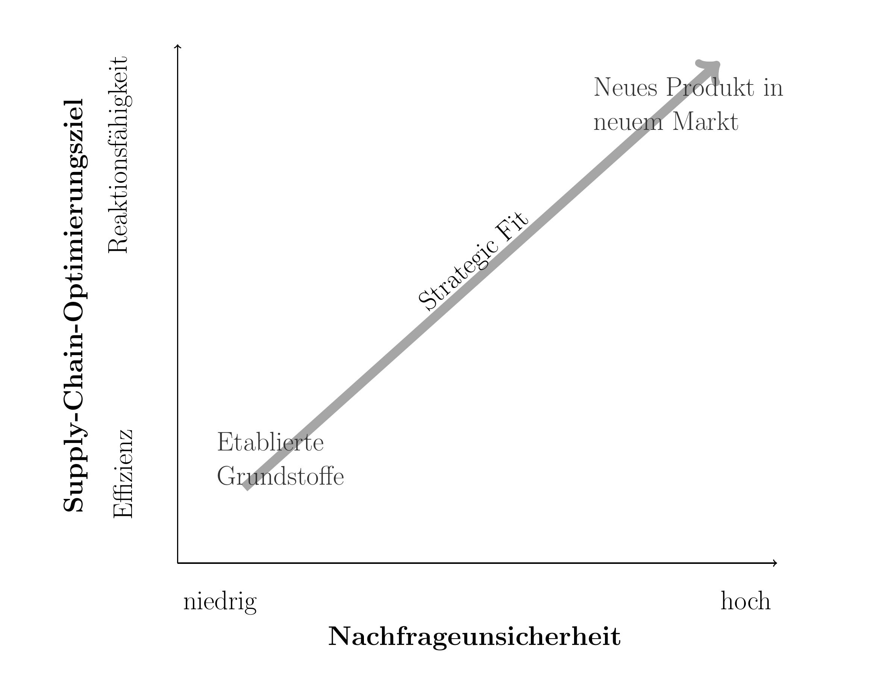
Wertschöpfung, strategische Fertigung und Strategic Fit
Kapitel 2 · Supply Chain Management & Distribution
Prof. Dr. Thomas Kirschstein
Grundlagen des SCM - Ziele & Zielkonflikte
Grundlagen des Supply Chain Managements
- Aufgaben, Begriffe und Konzepte
- Ziele & Zielkonflikte
- Kosten & Management
Lernziele
Nach dieser Einheit können Sie …
- Wertschöpfungsprozesse und die zentralen Treiber einer Supply Chain strukturieren,
- die Begriffe Reaktionsfähigkeit und Effizienz erläutern,
- die implizierte Unsicherheit eines Marktes und die Reaktionsfähigkeit einer Supply Chain gegenüberstellen,
- den Strategic Fit einer Supply-Chain-Konfiguration beurteilen.
Literatur zur Vertiefung
- Strategic Fit, Supply-Chain-Treiber und implizierte Unsicherheit: (Chopra and Meindl 2025, Kapitel 2–3).
- Abstimmung von Nachfrage und operativer Leistungsfähigkeit: (Cachon and Terwiesch 2024, Kapitel 1–3).
- Supply-Chain-Strategie und wertorientierte Logistik: (Christopher 2023, Kapitel 2–4).
Wertschöpfung als Prozess
Beschaffung ist der Prozess zum Einkauf und Bereit-stellung von Rohstoffen, Komponenten und Dienst-leistungen von externen Partnern, die für die Produktion von Waren und Dienstleistungen erforderlich sind.
Produktion ist ein zielgerichteter Prozess der Kombination von Gütern und Dienstleistungen in höherwertige Produkte.
Distribution umfasst die physische Verteilung von Waren vom Hersteller zum Endkunden und umfasst Lagerhaltung, Transport und Logistik von Fertigprodukten.
Absatz ist der Prozess des Verkaufs der Endprodukte an den Konsumenten oder Handelspartner.
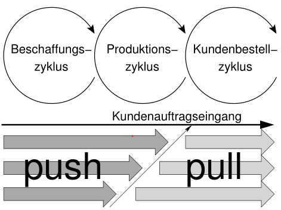
(Chopra and Meindl 2025, Kapitel 1.5)Strategische Fertigung
Entkopplungspunkt & Fertigungsstrategien
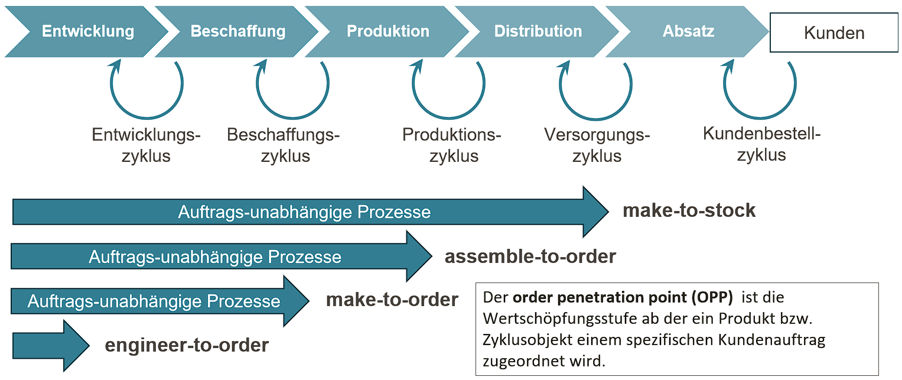
Strategische Fertigung
Denken in Zyklen
Kundenbestellzyklus: Verarbeitung von externen Kundenbedarfen
Distributions-/Versorgungszyklus: Umwandlung von Kundenbedarfen in interne Bedarfe an Fertigprodukten
Produktionszyklus: Umwandlung von internen Bedarfen in Produktions-bedarfe von Zwischenprodukten und Rohstoffen
Beschaffungszyklus: Gestaltung von Bestell-/Versorgungsprozessen für Rohstoffe und Dienstleistungen, die extern bezogen werden müssen
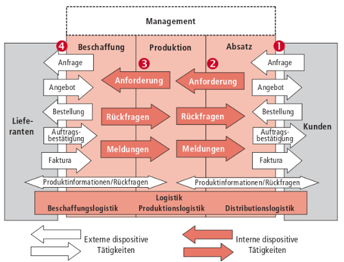
(Kummer et al. 2018, S. 45)
Strategische Fertigung
Entkopplung von Zyklen
Make-to-stock
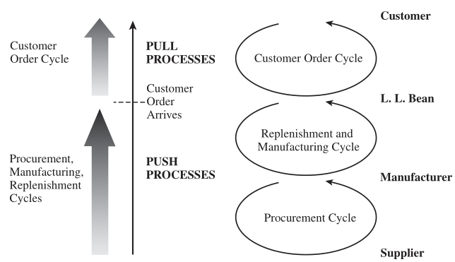
Beispiele: Lebensmitteleinzelhandel, Drogerien, …
Make-to-order
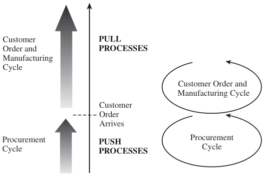
Beispiele: Gebäude, Flugzeuge, Gemälde
Strategische Ziele
Kundenzufriedenheit – Kundenerwartungen erfüllen
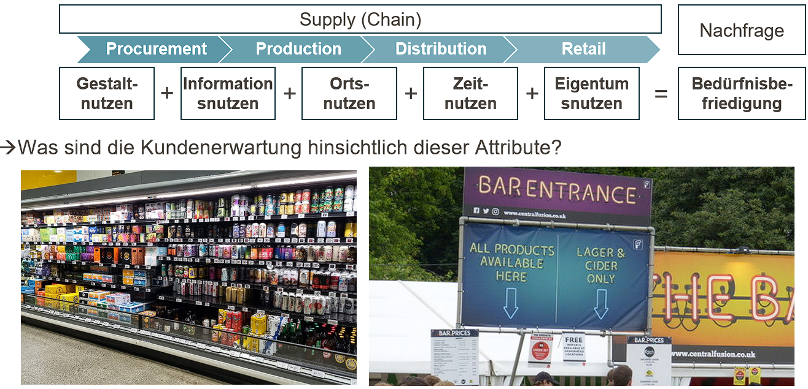
Strategische Ziele
Kundenzufriedenheit & Unsicherheit
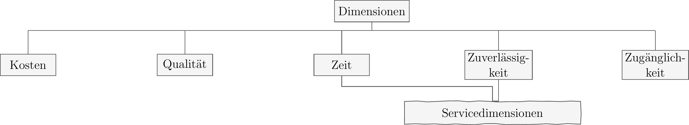
Kunden und Supply-Chain-Unsicherheit
- Nachfragemenge je Kundenauftrag
- Lieferzeit, die von Kunden akzeptiert wird
- Erwartete Produktvielfalt
- Erwartete Lieferbereitschaft
- Preis/Zahlungsbereitschaft
- Innovationsgrad der Produkte
Nachfrageunsicherheit
Unsicherheit der Nachfrage nach einem Produkt
Implizierte Nachfrageunsicherheit
Unsicherheit desjenigen Nachfragesegments, das durch die Supply Chain bedient werden soll basierend auf den definierten Nachfrageattributen
Umgang mit Unsicherheit
Kundenbedürfnisse & implizierte Unsicherheit
| Kundenbedürfnisse | Verursacht implizite Unsicherheit da … |
|---|---|
| (max.) Nachfragemengen steigen | Erhöhte Spannweite des Bedarfs größere Varianz / Schwankung der Nachfragemengen verursacht |
| Lieferzeit sinkt | Weniger Zeit bleibt um auf Nachfrageschwankungen zu reagieren |
| Anzahl angebotener Produkte erhöht | Nachfrage der einzelnen Produkte schwieriger zu prognostizieren |
| Lieferbereitschaftsgrad erhöht sich | Nachfragespitzen müssen nun abgefedert werden |
| Innovationsgrad erhöht sich | Nachfrage neuer Produkte in der Regel unbekannt oder schwer zu prognostizieren |
| Anzahl der Vertriebskanäle steigt | Nachfrage der einzelnen Vertriebskanäle schwieriger zu prognostizieren |
Umgang mit Unsicherheit
Rollen & Risikoallokation in Supply Chain
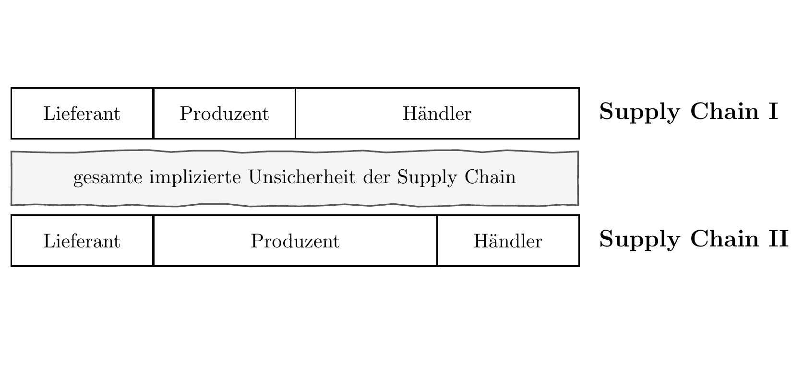
(Chopra and Meindl 2025, S. 57)
Umgang mit Unsicherheit
Reaktionsfähigkeit / responsiveness
Reaktionsfähigkeit
ist die Fähigkeit einer Supply Chain mit Nachfrageunsicherheit umzugehen
Reaktionsfähigkiet kann u.a. erreicht werden durch:
- Hohe Lagerbestände
- Kurze Reaktions -/ Lieferzeiten
- Hohe Produktvielfalt
- Kurze Entwicklungszyklen neuer Produkte
- Hohe Bereitschaftsgrade
- Reduktion von Versorgungsunsicherheiten
(Chopra and Meindl 2025, S. 56)
Strategische Ziele
Reaktionsfähigkeit vs. Effizienz
Reaktionsfähigkeit
Die Reaktionsfähigkeit einer Supply Chain ist die Fähigkeit einer Supply Chain mit Nachfrageunsicherheit umzugehen
Strategische Treiber
\(\rightarrow\) Reaktionsfähigkeit verursacht Kosten!
Effizienz
Effizienz einer Supply Chain ist das Inverse der Gesamtkosten einer Supply Chain, d.h. aller Kosten eines Produkts von
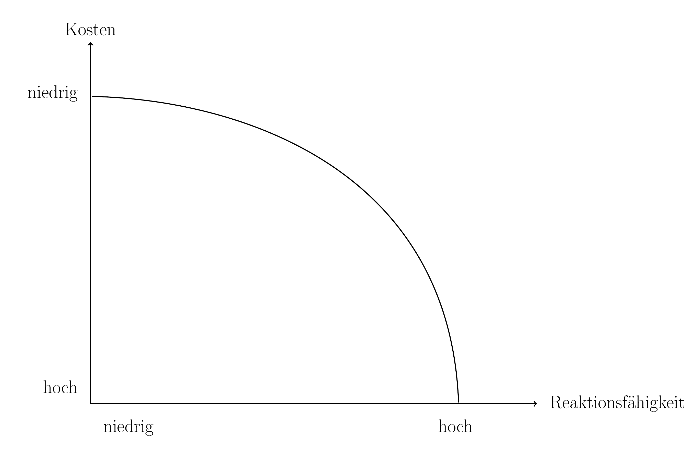
Strategisches Management
Supply Chain Treiber
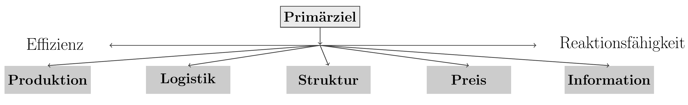
Figure 3
- Produktions- technologie
- Produktportfolio
- Fertigungstiefe
- Transportmodi
- Lagerkapazitäten
- Sicherheits- bestände
- Lieferanten- auswahl
- Standort- kapazitäten
- Stufen & Verbindungen
- Preisgestaltung
- Nachfrage- steuerung
- Rabattierung
- Informations-teilung
- System- integration
- Kollaborative Prognose & Planung
Strategisches Management
Teilstrategien
| Effiziente Supply Chains | Reaktive Supply Chains | |
|---|---|---|
| Primärziel | Nachfragebefriedigung zu niedrigsten Kosten | Schnellstmögliche Nachfragebefriedigung |
| Produkt-Design-Strategie | Geringe Produktvielfalt , Konzentation auf einfaches Design und hohe Durchsätze | Modulare Produktentwicklung und Postponement |
| Preisstrategie | Niedrige Preise und Margen da Kunden preissensitiv | Höhere Preise mit höherer Marge, da Kunden wenig preissensitiv |
| Fertigungsstrategie | Hohe Maschinenauslastung | Freie Kapazitäten um kurzfristig Produktionsmengen ausweiten zu können |
| Lagerstrategie | Minimierung von (Sicherheits-)Beständen | Einrichtung von Sicherheitsbeständen zur Absicherung von Nachfrageschwankungen |
| Versorgungsstrategie | Reduziere Zykluszeiten solange Kosten nicht steigen | Reduziere Zykluszeiten auch wenn Kosten steigen |
| Beschaffungsstrategie | Lieferantenauswahl nach Kosten und Verlässlichkeit | Lieferantenauswahl nach Reaktionsfähigkeit, Geschwindigkeit, Flexibilität und Qualität |
Strategisches Management
Normstrategien & SCM
| Normstrategie | Vorteil | Wettbewerbsbasis | Beitrag des SCM |
|---|---|---|---|
| Kostenführer | Kosteneffiziente Produktion anstoßen | Niedrigste Preise in der Produktkategorie | Effiziente kostengünstige Infrastruktur |
| Innovationsführer | Marktstärke nutzen und singuläre Technologie einsetzen | Begehrte und innovative Produkte generieren | Kurze Time- to -Market sichern, Volumen steigern |
| Serviceführer | Service auf Kunden konsequent zuschneiden | Erwartungen kundenspezifisch erfüllen | Kundenorientierte Entwicklung ermöglichen |
| Qualitätsführer | Sichere und zuverlässige Produkte herstellen | Singuläre Produkteigenschaften | Verlässliche SC, Quality Assurance |
| Nachhaltigkeitsführer | Nachhaltige Produkte und Prozesse | Nachhaltigkeitserwartungen der Kunden erfüllen | CO2-Neutralität, Energie- und Ressourcen-Schonung |
Cachon, Gérard, and Christian Terwiesch. 2024. Matching Supply with Demand: An Introduction to Operations Management. 5th ed. McGraw Hill.
Chopra, Sunil, and Peter Meindl. 2025. Supply Chain Management: Strategy, Planning, and Operation. 8th ed. Pearson.
Christopher, Martin. 2023. Logistics & Supply Chain Management. 6th ed. Pearson.
Kummer, Sebastian, Oskar Grün, and Werner Jammernegg. 2018. Grundzüge Der Beschaffung, Produktion Und Logistik. 4th ed. Pearson Deutschland GmbH.

Supply Chain Management